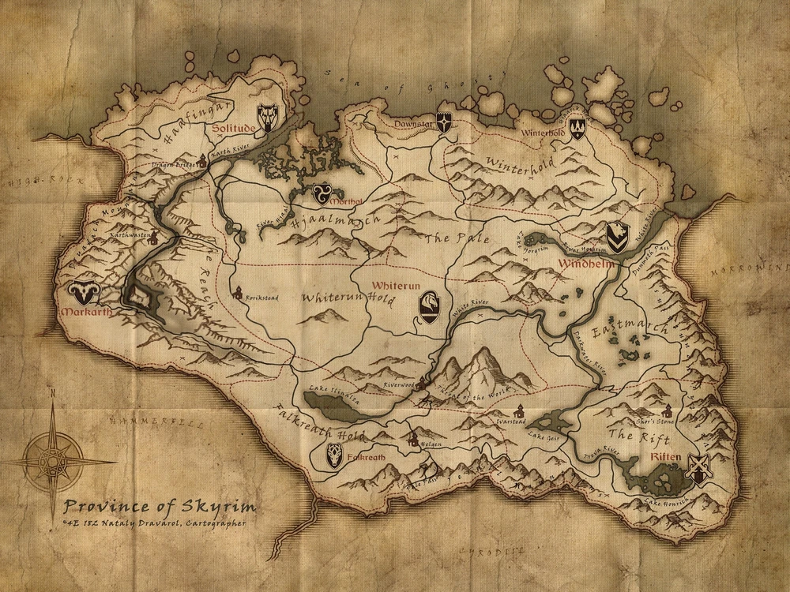

The Elder Scrolls V: Skyrim acontece em Skyrim, uma região que vem sendo ameaçada por uma guerra civil,
seguida pelo retorno dos dragões e de Alduin, o deus da destruição e antagonista da história.
Contexto
A história do jogo acontece cerca de 200 anos após os eventos de Oblivion, durante o ano 201 da 4th Era (4E201).
O High King of Skyrim foi morto, e uma guerra civil ocorreu por toda a região. De um lado, os que desejavam se
separar do império agora em ruínas. Do outro, os que ainda queriam permanecer como parte dele, acreditando na
preservação de valores. Para piorar a situação, uma profecia de Elder Scrolls anunciava o
retorno dos dragões de Alduin, o deus nórdico da destruição.
O jogador, que é um Dragonborn, começa o jogo como um prisioneiro. Depois de ser capturado tentando atravessar as
fronteiras de Skyrim, o jogador e alguns outros prisioneiros, incluindo Ralof e soldados do Stormcloaks, uma facção
rebelde que luta contar o império, e o líder do grupo, Ulfric Stormcloak, são levados para uma pequena vila para serem
executados por soldados do império.
Porém, alguns segundos antes da cabeça do jogador ser cortada, um dragão aparece e ataca todos os presentes.
Em meio ao caos, os prisioneiros aproveitam a oportunidade para fugir.
Os soldados dos Stormcloaks junto com Ulfric Stormcloak ajudam o jogador a encontrar um lugar seguro em uma torre.
Porém, o dragão ataca a estrutura e o jogador é obrigado a sair e tentar fugir sozinho.
No caminho, se encontra com um soldado imperial chamado Hadvar, que inicialmente ajudava na execução dos prisioneiros.
Ele diz para segui-lo até um lugar mais seguro. No meio do caminho, o jogador encontra Ralof novamente, e então decide entre
continuar com Hadvar, soldado imperial, ou com Ralof, soldado dos Stormcloaks. Durante o jogo, é revelado que a guerra civil
de Skyrim é o último acontecimento de uma profecia anunciada pelos Elder Scrolls, e que os Dragonborn, entidades nascidas com
a alma de um dragão (como o jogador) são os únicos capazes de derrotar o deus nórdico Alduin e os dragões.
Eventualmente, o jogador conhece Esbern, um dos últimos remanescentes dos Blades.
Skyrim fica no extremo norte do continente de Tamriel. É uma região montanhosa, com um clima frio, florestas de pinheiros,
campos abertos, planícies árticas e muitas cavernas. A região é dominada por cidades pequenas, vilas isoladas e trabalhadores rurais.
A vida selvagem é variada, sendo possível encontrar criaturas pequenas pelas florestas, e criaturas grandes e furiosas em montanhas e cavernas.
O clima na maior parte é ensolarado ou nublado, com eventuais chuvas e tempestades. Já nas partes geladas da região,
tempestades de neve acontecem o tempo todo.
A arquitetura e a atmosfera das vilas e cidades são parecidas com a cidade de Bruma, de The Elder Scrolls IV: Oblivion.
Apesar de Skyrim ser aproximadamente do mesmo tamanho de Cyrodill (aproximadamente 41 quilômetros quadrados de área, ou 25.4 milhas),
é a região menos povoadas de todo o continente. Em toda a região, existem apenas cinco cidades, mas todas elas são maiores e mais
variadas que as das outras regiões do continente. Além disso, existem muitas vilas menores nas proximidades.
Skyrim ainda conta com mais de 150 cavernas, todas podendo ser exploradas pelo jogador.
Abaixo o mapa da província de Skryrim

Assim como em Oblivion, o jogador pode selecionar uma entre as 10 diferentes raças de Tamriel - Imperials, Nords, Redguards, Bretons, Dark Elves,
High Elves, Wood Elves, Orcs, Khajiit, e os Argonians. Cada raça apresenta suas próprias habilidades e poderes. Por exemplo, os High Elves podem aumentar
a Magicka e começar com 50 pontos extras nesse atributo, o que pode ser crucial em uma batalha com feitiços.
As raças do jogo são:
© 2023 William Silva.
Análise e Desenvolvimento de Sistemas - Instituto Vianna Júnior.